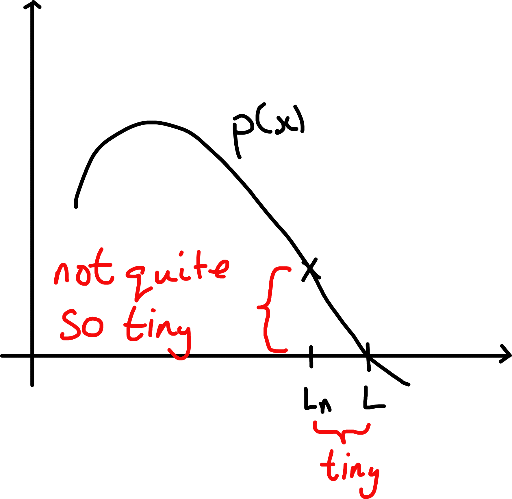

3 The Reals
We have seen \(\mathbb{N} \subset \mathbb{Z} \subset \mathbb{Q}\) (\(\mathbb{N} \to \mathbb{Z}\) lets us subtract and \(\mathbb{Z} \to \mathbb{Q}\) gives us division). Why stop here?
Proposition 3.1 There is no rational \(x\) with \(x^2 = 2\).
Proof. Suppose \(x^2 = 2\). Note we may assume \(x > 0\) since \((-x)^2 = x^2\). If \(x\) is rational then \(x = \frac{a}{b}\) for some \(a, b \in \mathbb{N}\). Thus \(x^2 = \frac{a^2}{b^2} = 2\), or \(a^2 = 2 b^2\). But the exponent of \(2\) in the prime factorisation of \(a^2\) is even while the exponent of \(2\) in the prime factorisation of \(2 b^2\) is odd, contradicting the Fundamental Theorem of Arithmetic, 2.5.
Note: The same proof shows that if \(\exists \; x \in \mathbb{Q}\) with \(x^2 = n\) for some \(n \in \mathbb{N}\), then \(n\) must be a square.
Proof (Alternative proof). Suppose \(x^2 = 2\) for some \(x = \frac{a}{b}\) with \(a, b \in \mathbb{N}\). Then for any \(c, d \in \mathbb{Z}\), \(cx + d\) is of the form \(\frac{e}{b}\) for some \(e \in \mathbb{Z}\). Thus if \(cx + d > 0\), then \(cx + d \geq \frac{1}{b}\). But \(0 < x - 1 < 1\) as \(1 < x < 2\) so if \(n\) is sufficiently large, \(0 < (x - 1)^n < \frac{1}{b}\). But for any \(n \in \mathbb{N}\), \((x - 1)^n\) is of the form \(cx + d\) for some \(c, d \in \mathbb{Z}\), since \(x^2 = 2\). This is a contradiction.
So “\(\mathbb{Q}\) has a gap”. How do we express the fact making reference only to \(\mathbb{Q}\)?
2 is an upper bound for the set of \(x\) s.t. \(x^2 < 2\), but so is \(1.5\), and 1.42, …
Crucial point: In \(\mathbb{Q}\), there is no least upper bound.
3.1 The Reals
The real numbers, written \(\mathbb{R}\), are a set with elements \(0\) and \(1\) (\(0 \neq 1\)), equipped with operations \(+\) and \(\cdot\), and an ordering \(<\) such that
\(+\) is commutative and associative with identity \(0\), and every \(x\) has an inverse under \(+\);
\(\cdot\) is commutative and associative with identity \(1\), and every \(x \neq 0\) has an inverse under \(\cdot\);
\(\cdot\) is distributive over \(+\), that is, \(\forall \; a, b, c\) \[\begin{align*} a (b + c) = ab + ac \end{align*}\]
\(\forall \; a, b\), exactly one of \(a < b\), \(a = b\) or \(b < a\) holds, and \(\forall \; a, b, c\), \[\begin{align*} a < b \text{ and } b < c \implies a < c; \end{align*}\]
\[\begin{align*} \forall \; a, b, c && a < b &\implies a + c < b + c \\ \text{and } && a < b &\implies ac < bc \quad \text{if } c > 0. \end{align*}\] (The above all hold for the rationals)
Given any set \(S\) of reals that is non-empty and bounded above \(S\) has a least upper bound.
6 is known as the least upper bound axiom
We say that a set \(S\) is bounded above if \(\exists \; x \in \mathbb{R}\) s.t. \(x \geq y \; \forall \; y \in S\).
Such an \(x\) is called an upper bound for \(S\).
\(x\) is the least upper bound for \(S\) if \(x\) is an upper bound for \(S\) and every other upper bound \(x'\) satisfies \(x' \geq x\).
When \(x\) is a least upper bound for \(S\), we may write “\(\operatorname{LUB}(S) = x\)” or “\(\operatorname{supremum}(S) = x\)” or “\(\sup(S) = x\)”.
Remark.
From (1) - (5), we can check, for example, that \(0 < 1\) (we have just let \(0\) and \(1\) represent the identities). Indeed, if not, then \(1 < 0\) (\(0 \neq 1\)) so \(0 = 1 - 1 < 0 - 1 = -1\) (\(-1 > 0\)) so \(0 (-1) < (-1) (-1) = 1\), a contradiction.
We may consider \(\mathbb{Q}\) as contained in \(\mathbb{R}\), by identity \(\frac{a}{b} \in \mathbb{Q}\) with \(a \cdot b^{-1} \in \mathbb{R}\) (\(b^{-1}\) is the multiplicative inverse we have not shown that \(b^{-1} = \frac{1}{b}\) yet).
\(\mathbb{Q}\) doesn’t satisfy (6) as e.g. the set of \(x\) s.t. \(x^2 < 2\) does not have a supremum.
In (6), the words “non-empty” and “bounded above” are crucial:
If \(S\) is empty then every \(x \in \mathbb{R}\) is an upper bound for \(S\), so there is no least upper bound.
If \(S\) is not bounded above, then it has no upper bound, and certainly no least upper bound.It is possible to construct \(\mathbb{R}\) “out of” \(\mathbb{Q}\) and check that (1) - (6), but it takes a lot of effort.
Example 3.1 \(S = \{ x \in \mathbb{R} : 0 \leq x \leq 1 \}\)

Is \(2\) an upper bound for \(S?\)
Yes: \(\forall \; x \in S, x \leq 2\).
Is \(\frac{3}{4}\) an upper bound for \(S?\)
No: \(\frac{7}{8} \in S, \frac{7}{8} \leq \frac{3}{4}\).
The least upper bound of \(S\) is \(1\) because
1 is an upper bound (as \(\forall \; x \in S, x \leq 1\))
every other upper bounds has \(y \geq 1\) (as \(1 \in S\)).
Hence \(\sup (S) = 1\)
\[\begin{align*} S &= \{ x \in \mathbb{R} : 0 \leq x \leq 1 \} \\ &= [0, 1] \end{align*}\]
Example 3.2 \[\begin{align*} S &= \{ x \in \mathbb{R} : 0 < x < 1 \} \\ &= (0, 1) \end{align*}\]
Is \(2\) an upper bound for \(S?\)
Yes: \(\forall \; x \in S, x \leq 2\).
Is \(\frac{3}{4}\) an upper bound for \(S?\)
No: \(\frac{7}{8} \in S, \frac{7}{8} \leq \frac{3}{4}\).
We have \(\sup (S) = 1\) because
\(1\) is an upper bound: \(\forall \; x \in S \ x \leq 1\);
no upper bound \(c\) is s.t. \(c < 1\). Indeed, c is certainly greater than 0 (in fact \(c \geq \frac{1}{2}\) since \(\frac{1}{2} \in S\)), so if \(c < 1\), then \(0 < c < 1\), so \(\frac{c + 1}{2} \in S\) with \(\frac{c + 1}{2} > c\) ⨳.

Warning If \(S\) has a greatest element, then \(\sup (S) = \max (S) \in S\). But \(\sup (S)\) can exist when \(\max (S)\) does not, in which case \(\sup (S) \notin S\).
Example 3.3 \[\begin{align*} S &= \left\{ 1 - \frac{1}{n} : n \in \mathbb{N} \right\} \\ &= \left\{ 0, \frac{1}{2}, \frac{2}{3}, \frac{3}{4}, \dots \right\} \end{align*}\]
Clearly \(1\) is an upper bound.
Is there an upper bound \(< 1\)?
Proposition 2.1 (Axiom of Archimedes) \(\mathbb{N}\) is not bounded above in \(\mathbb{R}\).
Proof. Suppose on the contrary that \(\mathbb{N}\) is bounded above.
Let \(c = \sup \mathbb{N}\).
By definition, \(c - 1\) is not an upper bound for \(\mathbb{N}\), so \(\exists \; n \in \mathbb{N}\) s.t. \(n > c - 1\).
But then \(n + 1 \in \mathbb{N}\) with \(n + 1 > c\), contradicting the fact that \(c\) was an upper bound.
Corollary 3.1 For all \(t > 0, \exists \; n \in \mathbb{N}\) with \(\frac{1}{n} < t\).
Proof. Given \(t > 0\), by Proposition 2.1, \(\exists \; n \in N\) s.t. \(n > \frac{1}{t}\). Hence \(\frac{1}{n} < t\).
A set \(S\) is said to be bounded below if \(\exists \; x\) s.t. \(x \leq y \; \forall \; y \in S\). Such an \(x\) is called a lower bound for \(S\). If \(S\) is non-empty and bounded below, then \(-S = \{ -y: y \in S \}\) is non-empty and bounded above, so it has a least upper bound, \(c\) say. Hence \(-c\) is the greatest lower bound of \(S\). We denote it by “\(\operatorname{GLB}(S)\)”, or “\(\operatorname{infimum} (S)\)”, or “\(\inf (S)\)”.
Corollary 3.1 immediately implies that \(\inf \left(\left\{ \frac{1}{n} : n \in \mathbb{N} \right\}\right) = 0\).
Proposition 2.1 and Corollary 3.1 show that there are no “infinitely large” or “infinitely small” numbers in \(\mathbb{R}\).
Back to Example 3.3: we have \(\sup (S) = 1\), for suppose \(c < 1\) is an upper bound for \(S\). Then \(1 - \frac{1}{n} < c \; \forall \; n \in \mathbb{N}\), so \(0 < 1 - c < \frac{1}{n}\) contradicting Corollary 3.1.
Theorem 3.1 There exists \(x \in \mathbb{R}\) with \(x^2 = 2\).
Proof. Let \(S = \{ x \in \mathbb{R}: x^2 < 2 \}\).

Note that \(S\) is non-empty since e.g. \(1 \in S\). It is also bounded above e.g. by \(2\). Hence \(S\) has a supremum, which we denote by \(c\).
Observe that \(1 < c < 2\).
We claim that \(c^2 = 2\).
Suppose on the contrary that \(c^2 < 2\).
For \(0 < t < 1\), have \((c + t)^2 = c^2 + 2ct + t^2 \leq c^2 + 4t + t = c^2 + 5t < 2\) for small t (namely, \(t = \frac{2 - c^2}{5}\)).
But this contradicts the assumption that \(c\) was an upper bound for \(S\) (since \(c + t \in S\)).
Suppose now that \(c^2 > 2\).
For \(0 < t < 1\), have \((c - t)^2 = c^2 - 2ct + t^2 \geq c^2 - 4t > 2\) for small t (namely, \(t = \frac{c^2 - 2}{4}\)).
This contradicts the assumption that \(c\) is the least upper bound for \(S\) (since \(c - t\) is an upper bound for \(S\)).
Remark. The same proof shows that \(x^{\frac{1}{n}}\) exists \(\forall \; n \in N,\; x \in \mathbb{R},\; x > 0\).
[i.e. \(\forall \; n \in \mathbb{N},\; x \in \mathbb{R},\; x > 0,\ \exists \; y \in \mathbb{R}\) s.t. \(y^n = x\).]
A real that is not rational is called irrational.
E.g. \(\sqrt{2}, \sqrt{3}, \sqrt{5}, \sqrt{6}\) are irrational.
Also \(2 + 3\sqrt{5}\) is irrational.
Indeed if \(2 + 3\sqrt{5} = \frac{a}{b}\) with \(a, b \in \mathbb{N}\) then \(\sqrt{5} = \frac{a - 2b}{3b} \in \mathbb{Q}\), ⨳. \(\Box\)
The rationals are dense in \(\mathbb{R}\), in the sense that \(\forall \; a < b \in \mathbb{R},\ \exists \; c \in \mathbb{Q}\) with \(a < c < b\).
Proof. Indeed, we may assume \(a \geq 0\) (we can just add an integer, find the rational and subtract the integer).
By Corollary 3.1, \(\exists \; n \in \mathbb{N}\) with \(\frac{1}{n} < b - a\).
By the Axiom of Archimedes 2.1, \(\exists \; N \in \mathbb{N}\) s.t. \(N > b\).
Let \(T = \{ k \in \mathbb{N} : \frac{k}{n} \geq b \}\), then \(Nn \in T\), so \(T \neq \emptyset\).
By the Well-Ordering Principle, \(T\) has a least element \(m\).
Set \(c = (m - 1) \cdot \frac{1}{n}\).
Since \(m - 1 \notin T\), \(c < b\).
If \(c \leq a\) then \(\frac{m}{n} = c + \frac{1}{n} < a + b - a = b\), ⨳ of \(m \in T\).
Hence \(a < c < b\).
The irrationals are also dense in \(\mathbb{R}\), i.e. \(\forall \; a < b \in \mathbb{R},\ \exists \; c \in \mathbb{R} \setminus \mathbb{Q}\) with \(a < c < b\).
Indeed, take a rational \(c\) with \(a \sqrt{2} < c < b \sqrt{2}\) then \(a < \frac{c}{\sqrt{2}} < b\).
3.2 Sequences
A sequence is an enumerated collection of objects in which repetitions are allowed and order matters.
Write \(a_1, a_2, a_3, \dots\) or \((a_n)_{n = 1}^\infty\).
What does it mean for a sequence \(a_1, a_2, \dots\) to tend to a limit \(l\)?
It is not enough that the terms \(a_n\) get closer to \(l\), e.g. we would not want \(\frac{1}{2}, \frac{2}{3}, \frac{3}{4}, \frac{4}{5}, \dots\) to tend to \(37\).
And it is not enough that the \(a_n\) get arbitrarily close to \(l\), \(\forall \; \epsilon > 0, \exists \; n \in \mathbb{N}\) s.t. \(l - \epsilon < a_n < l + \epsilon\), e.g. we would not want \(\frac{1}{2}, 10, \frac{2}{3}, 10, \frac{3}{4}, 10, \dots\) to tend to \(1\).
We want the sequence to get and stay with \(\epsilon\) of \(l\).
We say that the sequence \(a_1, a_2, \dots\) tends to the limit \(l \in \mathbb{R}\) as \(n\) tends to infinity if, \(\forall \; \epsilon > 0, \exists \; N \in \mathbb{N}\) s.t. \(\forall \; n \geq N, \lambda - \epsilon < a_n < \lambda + \epsilon\).

More compactly: \(\forall \; \epsilon > 0, \exists \; N \in \mathbb{N}\) s.t. \(\forall \; n \geq N, | a_n - l | < \epsilon\), where the absolute value \(|x|\) of \(x \in \mathbb{R}\) is defined by \[\begin{align*} |x| = \begin{cases} x & \text{if } x \geq 0 \\ -x & \text{if } x < 0 \end{cases}. \end{align*}\] We think of \(|a - b|\) as the “distance between \(a\) and \(b\) on the number line”, e.g. \(|2 - 9| = |9 - 2| = 7\). It is easy to check the triangle inequality \(|a - b| \leq |a- c| + |c - b|\).
When \(a_n\) tends to \(l\) as \(n\) tends to infinity, we also write “\(a_n \to l\) as \(n \to \infty\)” or “\(\lim_{n \to \infty} a_n = l\)” or “\((a_n)_{n = 1}^\infty\) converges to \(l\)”.
If there is a limit \(l\) but it is not specified we simply say “\((a_n)_{n = 1}^\infty\) converges”.
If \((a_n)_{n = 1}^\infty\) does not converge, then we say it diverges.
Example 3.4
\(\frac{1}{2}, \frac{2}{3}, \frac{3}{4}, \frac{4}{5}, \dots\)
\(a_n = 1 - \frac{1}{n}\).
Given \(\epsilon > 0\), choose \(N > \frac{1}{\epsilon}\) (by the Axiom of Archimedes, 2.1). If \(n \geq N\), then \[\begin{align*} |a_n - 1| &= |1 - \frac{1}{n} - 1| \\ &= \frac{1}{n} \\ &\leq \frac{1}{N} \\ &< \epsilon. \end{align*}\] Hence \(a_n \to 1\) as \(n \to \infty\).\(0, \frac{1}{2}, \frac{1}{4}, 0, \frac{1}{6}, \dots\)
\[\begin{align*} a_n = \begin{cases} \frac{1}{n} & n \text{ even} \\ 0 & n \text{ odd} \end{cases} \end{align*}\] Given \(\epsilon > 0\), pick \(N > \frac{1}{\epsilon}\).
If \(n \geq N\), then \[\begin{align*} |a_n - 0| &\leq \frac{1}{n} \\ &\leq \frac{1}{N} \\ &< \epsilon. \end{align*}\] Hence \(a_n \to 0\) as \(n \to \infty\).\(\frac{1}{2}, \frac{1}{2} + \frac{1}{4}, \frac{1}{2} + \frac{1}{4} + \frac{1}{8}, \dots\)
\(a_n = 1 - \frac{1}{2^n}\) (by induction)
Given \(\epsilon > 0\), choose \(N > \frac{1}{\epsilon}\). If \(n \geq N\), then \[\begin{align*} |a_n - 1| &= |1 - \frac{1}{2^n} - 1| \\ &= \frac{1}{2^n} \\ &\leq \frac{1}{n} \\ &\leq \frac{1}{N} \\ &< \epsilon. \end{align*}\] Hence \(a_n \to 1\) as \(n \to \infty\).\(-1, 1, -1, 1, -1, 1, \dots\)
\(a_n = (-1)^n\)
If \(a_n\) does not tend to \(l\), we write “\(a_n \not\to l\)”.
This mean \(\exists \; \epsilon > 0 \; \forall \; N \in \mathbb{N} \; \exists \; n \geq N \ |a_n - l| \geq \epsilon\).
Indeed, in 4, we show that e.g. \(a_n \not\to 0\).
Let \(\epsilon = 1\).
Then \(|a_n - 0| = 1 \; \forall \; n \in N\).
In fact, \(a_n\) does not converge to any limit \(l \in \mathbb{R}\).
For suppose \(a_n \to l\) as \(n \to \infty\), for some \(l \in \mathbb{R}\).
Let \(\epsilon = 1\).
So \(\exists \; N \in \mathbb{N}\) s.t. \(\forall \; n \geq N\), \(|a_n - l| < 1\).
In particular, \(|1 - l| < 1\) and \(|-1-l| < 1\).
But then \(2 = | 1 - (-1)| \leq |1 - l| + |-1 - l| < 2.\) ⨳
We have shown that \(((-1)^n)_{n = 1}^\infty\) does not converge to any \(l \in \mathbb{R}\), hence it is divergent (note: it does not mean “goes off to infinity”).
We implicitly assumed that if a limit exists, then it is unique.

Proof. Indeed, suppose that \(a_n \to l\) and \(a_n \to k\) as \(n \to \infty\), with \(l \neq k\).
Choose \(\epsilon = \frac{1}{2} |l - k|\).
Then \(\exists \; N \in \mathbb{N}\) s.t. \(|a_n - l| < \epsilon \; \forall \; n \geq N\) and \(\exists \; M \in \mathbb{N}\) s.t. \(|a_n - k| < \epsilon \; \forall \; n \geq M\).
But then for any \(n \geq \max \{N, M \}\),
\[\begin{align*}
2 \epsilon = |l - k| \leq |a_n - l| + |a_n - k| < 2 \epsilon. ⨳
\end{align*}\]
A sequence is bounded if there is a real number \(B\) s.t. \(|a_n| \leq B\) for all \(n \in \mathbb{N}\).
Notice that a convergent sequence is bounded:
for if \(a_n \to l\) as \(n \to \infty\), then \(\exists \; N \in \mathbb{N}\) s.t. \(\forall \; n \geq N\), \(|a_n - l| < 1\).
Hence \(|a_n| \leq \max \{ |a_1|, |a_2|, \dots, |a_{N-1}|, |l| + 1 \}\) (bound of the entire sequence).
We say a sequence \((a_n)^\infty_{n = 1}\) is monotonic if it is either increasing or decreasing. It is increasing if \(a_{n + 1} \geq a_n \; \forall \; n \in N\).
Proof. Suppose \((a_n)\) (we will drop super and subscript from now on) is increasing. Then the set \(\{a_n : n \geq 1\}\) is non-empty and is bounded above (because \((a_n)\) is bounded), so it has a supremum \(l\). Given \(\epsilon > 0\), \(l - \epsilon\) is not an least upper bound for \(\{a_n : N \geq 1\}\), so there is some \(N \in \mathbb{N}\) s.t. \(a_n > l - \epsilon \; \forall \; n \in N\). Thus \(l - \epsilon < a_n \leq l \; \forall \; n \geq N\). Hence for all \(n \geq N, |a_n - l| < \epsilon\), so \(a_n \to l\).

Decreasing case is similar.
Remark.
Note that for an increasing sequence to converge, we only need to know that it is bounded above.
The sequence \((a_n)\) with \(a_n = n\) is increasing but not bounded (an in fact, it diverges).
Theorem 3.2 is equivalent to the least Upper Bound Axiom.
We can show that every sequence has a monotonic subsequence.
Proposition 3.2 If \(a_n \leq d \; \forall \; n\) and \(a_n \to c\) as \(n \to \infty\), then \(c \leq d\).
Proof. Suppose \(c > d\), let \(\epsilon = |c - d|\). Then \(\exists \; N \in \mathbb{N}\) s.t. \(\forall \; n \geq N, |a_n - c| < \epsilon\). But \(|a_n - c| < \epsilon \implies a_n > d\). ⨳
Warning: If \(a_n < d \; \forall \; n\) and \(a_n \to c\) as \(n \to \infty\), we need not have \(c < d\). E.g. \(\frac{1}{2}, \frac{1}{2} + \frac{1}{4}, \frac{1}{2} + \frac{1}{4} + \frac{1}{8}, \dots\) Each term is \(< 1\), but \(\lim_{n \to \infty} a_n = 1\).
Proposition 3.3 If \(a_n \to c\) as \(n \to \infty\) and \(b_n \to d\) as \(n \to \infty\), then \(a_n + b_n \to c + d\) as \(n \to \infty\).
Proof. Given \(\epsilon > 0\).
\(\exists N \in \mathbb{N}\) s.t. \(\forall \; n \geq N\), \(|a_n - c| < \frac{\epsilon}{2}\) and \(\exists M \in \mathbb{N}\) s.t. \(\forall \; n \geq M\), \(|b_n - d| < \frac{\epsilon}{2}\).
Choose \(N^* = \max \{M, N \}\).
\[\begin{align*}
\text{Then } \forall \; n \in N, | a_n + b_n - (c + d)| &\leq |a_n - c| + |b_n - d| \\
&\leq \frac{\epsilon}{2} + \frac{\epsilon}{2} \\
&\leq \epsilon.
\end{align*}\]
3.3 Series
In the reals, the sum of two numbers is defined, so by induction, finite sums are defined. But infinite sums are not! Nevertheless e.g. \(1 - \frac{1}{2} + \frac{1}{3} - \frac{1}{4} + \frac{1}{5} - \dots = \log 2\). Let \((a_n)\) be a sequence. Then \(s_k = \sum_{n=1}^{k} a_n\) is the \(k\)th partial sum of the series whose \(n\)th terms is \(a_n\). We write \(\sum_{n=1}^{\infty} a_n = \lim_{k \to \infty}\) iff the limit exists.
Example 3.5 The series whose \(n\)th term is \(a_n = r^n\) for some \(|r| < 1\), is known as the geometric series. \[\begin{align*} s_k &= r + r^2 + r^3 + \dots + r^k \\ &= r \cdot \frac{1 - r^k}{1 - r} \to \frac{r}{1 - r} \text{ as } k \to \infty \text{ since } r^k \to 0. \end{align*}\] Hence \(\sum_{n=1}^{\infty} r^n = \frac{r}{1-r}\)
Example 3.6 The series whose \(n\)th term is \(a_n = \frac{1}{n}\) is known as the harmonic series. \[\begin{align*} s_{2^k} &= 1 + \frac{1}{2} + \underbrace{\frac{1}{3} + \frac{1}{4}}_{\text{each } \geq \frac{1}{4}} + \underbrace{\frac{1}{5} + \frac{1}{6} + \frac{1}{7} + \frac{1}{8}}_{\text{each } \geq \frac{1}{8}} + \frac{1}{9} \dots + \frac{1}{2^k} \\ &\geq 1 + \frac{1}{2} + \frac{1}{4} + \frac{1}{4} + \frac{1}{8} + \frac{1}{8} + \frac{1}{8} + \frac{1}{8} + \frac{1}{16} \dots + \frac{1}{2^k} \\ \text{In general, } &\frac{1}{2^m + 1} + \frac{1}{2^m + 2} + \dots + \frac{1}{2^{m + 1}} \geq 2^{m} \frac{1}{2^{m + 1}} = \frac{1}{2} \\ \text{Hence } s_{2^k} &\geq 1 + \frac{k}{2}. \end{align*}\] So the partial sums are increasing and unbounded, so the \(\sum_{n=1}^{\infty} \frac{1}{n}\) diverges.
Example 3.7 \(a_n = \frac{1}{n^2}\)
\[\begin{align*} s_{2^k - 1} &= 1 + \underbrace{\frac{1}{2^2} + \frac{1}{3^2}}_{\leq 2 \cdot \frac{1}{2^2}} + \underbrace{\frac{1}{4^2} + \frac{1}{5^2} + \frac{1}{6^2} + \frac{1}{7^2}}_{\leq 4 \cdot \frac{1}{4}^2} + \dots + \frac{1}{(2^k - 1)^2} \\ \text{In general, } &\frac{1}{(2^m)^2} + \frac{1}{(2^m + 1)^2} + \frac{1}{(2^m + 2)^2} + \dots + \frac{1}{(2^{m + 1} - 1)^2} \leq 2^{m} \frac{1}{(2^{m})^2} = \frac{1}{2^m}, \\ \text{so } s_{2^k - 1} &\leq 1 + \frac{1}{2} + \frac{1}{2^2} + \dots + \frac{1}{2^{k - 1}} < 2 \text{ (e.g. by example )}. \end{align*}\] 3.5 By Theorem 3.2, \(\sum_{n=1}^{\infty} \frac{1}{n^2}\) converges as partial sums are increasing and bounded above. In fact \(\sum_{n=1}^{\infty} \frac{1}{n^2} = \frac{\pi^2}{6}\).
Examples 3.6 and 3.7 are extremely important and you should understand them well. You should not try and write down inequalities between infinite sum until you have established the limits exist using partial sums.
3.4 Decimal expansion
Let \((d_n)\) be a sequence with \(d_n \in \{0, 1, 2, \dots, 9\}\).
Then \(\sum_{n=1}^{\infty} \frac{d_n}{10^n}\) converges to some limit \(r\), where \(0 \leq r < 1\), because the partial sums \(s_m = \sum_{n=1}^{m} \frac{d_n}{10^n}\) are increasing and bounded above by \(\sum_{n=1}^{\infty} \frac{9}{10^n} = \frac{9}{10} \cdot \frac{1}{1 - \frac{1}{10}} = 1\).
We say that \(0. d_1 d_2 d_3 \dots\) is the decimal expansion of \(r\).
Does every \(x, 0 \leq x < 1\), have a decimal expansion?
Pick \(d_1 \in \mathbb{Z}\) maximal s.t. \(\frac{d_1}{10} \leq x < 1\).
Then \(d_1 \leq 9\) because \(x < 1\) and \(x - \frac{d_1}{10} < \frac{1}{10}\) because \(d_1\) maximal.
Pick \(d_2 \in \mathbb{Z}\) maximal s.t. \(\frac{d_2}{10^2} \leq x - \frac{d_1}{10}\).
Then \(d_2 \leq 9\) because \(x - \frac{d_1}{10} < \frac{1}{10}\) and \(x - \frac{d_1}{10} - \frac{d_2}{10^2} < \frac{1}{10^2}\) because \(d_2\) maximal.
Inductively, pick \(d_n \in \mathbb{Z}\) maximal with \(\frac{d_n}{10^n} < x - \sum_{j=1}^{n - 1} \frac{d_j}{10^j}\) so \(0 \leq x - \sum_{j=1}^{n - 1} \frac{d_j}{10^j} < \frac{1}{10^n}\).
Since \(\frac{1}{10^n} \to 0\) as \(n \to \infty\), \(x - \sum_{j=1}^{n} \frac{d_j}{10^j} \to 0\), i.e. \(x = \sum_{j=1}^{\infty} \frac{d_j}{10^j} = 0.d_1 d_2 d_3 \dots\)
Remark.
Decimal expansions need not be unique, e.g. \(0.47999 \dots = 0.48000 \dots\) Suppose \(0. a_1 a_2 a_3 \dots = 0. b_1 b_2 b_3 \dots\) We may suppose \(a_j = b_j\) for \(j < K\) for some \(K\) and \(a_K < b_K\). Then \(\sum_{j=K+1}^{\infty} \frac{a_j}{10^j} \leq \sum_{j=k+1}^{\infty} \frac{9}{10^j} = \frac{9}{10^{k + 1}} \frac{1}{1 - \frac{1}{10}} = \frac{1}{10^k}\). Hence we must have \(b_K = a_K + 1\)13 and \(a_j = 9, b_j = 0 \; \forall \; j > K\).
A decimal expansion is periodic if, after a finite number of terms, say \(\ell\) digits, it repeats in blocks, of length \(k\). I.e. \(\exists \; \ell, k\) s.t. \(d_{n + k} = d_n \; \forall \; n > \ell\).
A periodic decimal is rational, e.g. \[\begin{align*} x &= 0.7832147147147 \dots \\ 10^4 x - 7832 &= 0.147147 \dots \\ &= 147 \sum_{j=1}^{\infty} \frac{1}{10^{3j}} \\ &= 147 \cdot \frac{1}{10^3} \cdot \frac{1}{1 - 10^3} \end{align*}\] so \(x \in \mathbb{Q}\).
Conversely, if \(x \in \mathbb{Q}\), then \(x\) has a periodic decimal expansion. To see this, we write \(x = \frac{p}{2^a 5^b q}\) where \(a, b, p, q \in \mathbb{Z}\), \(a, b, q \geq 0\) and \((q, 10) = 1\).
Then \(10^{max(a, b)}x = \frac{t}{q} = n + \frac{c}{q}\), where \(n, c \in \mathbb{Z}\) and \(0 \leq c < 9\). By Fermat-Euler 2.8, \(10^{\phi(q)} \equiv 1 \mod q\), or \(10^{\phi(q)} - 1 = kq\) for some \(k \in \mathbb{N}\).
Hence \(\frac{c}{q} = \frac{kc}{kq} = \frac{kc}{10^{\phi(q)} - 1} = kc \sum_{j=1}^{\infty} \frac{1}{(10^{\phi(q)})^j}\).
Since \(0 \leq kc < kq\), we can write \(kc\) as a \(\phi(q)\)-digit numbers \(d_1 d_2 \dots d_{\phi(q)}\). Then \(\frac{c}{q} = 0.d_1 d_2 \dots d_{\phi(q)} d_1 d_2 \dots d_{\phi(q)} \dots\) and so \(x\) is periodic.
3.5 Euler’s number \(e\)
Define \(e = 1 + \frac{1}{1!} + \underbrace{\frac{1}{2!}}_{= \frac{1}{2}} + \underbrace{\frac{1}{3!}}_{\leq \frac{1}{4}} + \underbrace{\frac{1}{4!}}_{\leq \frac{1}{8}} + \dots\)
Note that by Theorem 3.2 this series converges because the partial sums are increasing and bounded above by
\[\begin{align*}
1 + 1 + \frac{1}{2} + \frac{1}{4} \dots &= 3
\end{align*}\]
If we define \(0! = 1\), then \(e = \sum_{j=0}^{\infty} \frac{1}{j!}\).
Proposition 3.4 \(e\) is irrational
Proof. Suppose \(e\) were rational, i.e. \(e = \frac{p}{q}\) where \(p, q \in \mathbb{N}\) and \(q > 1\) (since \(2 < e < 3\)).
Then \(q! e \in \mathbb{N}\).
\[\begin{align*}
\text{But } q! e &= \underbrace{q! + \frac{q!}{1!} + \frac{q!}{2} + \frac{q!}{3!} + \dots + \frac{q!}{q!}}_{\text{The idea is: } \in \mathbb{N}} + \underbrace{\frac{q!}{(q+1)!} + \frac{q!}{(q+2)!} + \dots}_{\text{We want to show: } < 1} \\
&= N + x \text{ for some $N \in \mathbb{N}$} \\
\text{and } x &= \sum_{j=q+1}^{\infty} \frac{q!}{j!} \\
&= \sum_{j=1}^{\infty} \frac{q!}{(q + j)!} \\
&= \frac{1}{q+1} + \underbrace{\frac{1}{(q + 1)(q + 2)}}_{\leq \frac{1}{(q + 1)^2}} + \underbrace{\frac{q}{(q + 1)(q + 2)(q + 3)}}_{\leq \frac{1}{(q + 1)^3}} + \dots \\
\text{and in general, } \frac{q!}{(q + j)!} &\leq \frac{1}{(q + 1)^j}, \\
\text{so } x &\leq \frac{1}{q + 1} + \frac{1}{(q + 1)^2} + \frac{1}{(q + 1)^3} + \dots = \frac{1}{q} < 1 \text{ as } q \geq 2.
\end{align*}\]14
Hence \(0 < x < 1\), contradicting that \(q! e \in \mathbb{N}\), so \(e\) is irrational.
3.6 Algebraic and Transcendental Numbers
We say a real number \(x\) is algebraic if it is a root of a (non-zero) polynomial with integer coefficients (or rational coefficients - same thing!).
Example 3.8
Every rational number is algebraic: \(x = \frac{p}{q} \implies qx - p = 0\).
\(\sqrt{2}\) is algebraic: it satisfies \(x^2 - 2 = 0\).
A real number is transcendental if it is not algebraic.
Theorem 3.3 (Liouville 1851) The number \(L = \sum_{n=1}^{\infty} \frac{1}{10^{n!}}\) is transcendental.
We will need two facts about polynomials.
Fact A: For any polynomial \(p, \; \exists\) constant \(k\) s.t. \(|p(x) - p(y)| \leq k |x - y| \; \forall \; 0 \leq x, y \leq 1\).
Proof. Indeed, suppose \(p(x) = a_d x^d + a_{d-1}x^{d-1} + \dots + a_1 x + a_0\). \[\begin{align*} \text{Then } p(x) - p(y) &= a_d (x^d - y^d) + a_{d-1} (x^{d-1} - y^{d-1}) + \dots + a_1 (x - y) \\ &= (x - y) [a_d (x^{d- 1} + x^{d-2} y + \dots + y^{d-1}) + \dots + a_1] \\ \text{so } |p(x) - p(y)| &\leq |x - y| | d \cdot (|a_d| + |a_{d-1}| + \dots + |a_1|) | \end{align*}\]
Fact B: A non-zero polynomial of degree \(d\) has at most \(d\) roots.
Proof. Indeed, given a polynomial \(p\) of degree \(d\), we may assume that the fact holds for all polynomial of degree \(< d\) and that \(p\) has a root \(a\) (otherwise, we’re done).
By long division, we write \(p(x) = (x-a) q(x)\) for some polynomial \(q\) of degree \(d - 1\).
So each root of \(p\) is either \(a\) or a root of \(q\).
But by the induction hypothesis, \(q\) has at most \(d - 1\) roots.
Proof (Theorem 3.3). Write \(L_n = \sum_{k=1}^{n} \frac{1}{10^{k!}}\), so \(L_n \to L\).
Suppose there is a polynomial \(p\) of which \(L\) is a root.
Then by Fact A, there exists \(k\) s.t. \(|p(x) - p(y)| \leq k |x - y| \; \forall \; 0 \leq x, y \leq 1\).

\[\begin{align*}
\text{Note } |L - L_n| = \sum_{k=n + 1}^{\infty} \frac{1}{10^{k!}} &\leq \frac{1}{10^{(n + 1)!}} \left( 1 + \frac{1}{2} + \frac{1}{2}^2 \dots \right) \\
&= \frac{2}{10^{(n + 1)!}}
\end{align*}\]
Suppose \(p\) has degree \(d\), i.e. \(p(x) = a_d x^d + a_{d-1}x^{d-1} + \dots + a_1 x + a_0\) with \(a_i \in \mathbb{Z}\), \(a_d \neq 0\).
Notice that \(L_n = s / 10^{n!}\) for some \(s \in \mathbb{N}\), so \(p(L_n) = t / 10^{n! d}\) for some \(t \in \mathbb{Z}\) (as largest denominator is \(1 / 10^{n!}\) and \(1 / 10^{n! d}\) respectively).
By Fact B, for sufficiently large \(n\), \(L_n\) is not a root of \(p\) (as it has finitely many roots). Hence \(|p(L_n)| \geq 1 / 10^{n! d}\), i.e. \(|p(L_n) - p(L)| \geq 1 / 10^{n! d}\). Therefore \(1 / 10^{n! d} \leq K \frac{2}{10^{(n + 1)!}} = K \frac{2}{10^{n!} 10^{n + 1}}\), which is a contradiction for sufficiently large \(n\).
Remark.
The same proof shows that any real number \(x\) s.t. \(\forall \; n \in \mathbb{N}, \; \exists\) rational \(\frac{p}{q}\) with \(0 < |x - \frac{p}{q}| < \frac{1}{q^n}\) is transcendental. “\(x\) has a very good rational approximation \(\implies\) transcendental”.
Such \(x\) are knows are Liouville numbers.
This proof does not show that \(e\) is transcendental, but in fact it is.
We will give another proof of the existence of transcendental numbers in 5.3.
3.7 The Complex Numbers
Some polynomials have no real roots, e.g. \(x^2 + 1\). We will try to define \(x\) with \(x^2 = -1\) “into existence”.
The complex numbers, \(\mathbb{C}\), consist of \(\mathbb{R}^2\) (the set of all ordered pairs \((a, b)\) with \(a, b \in \mathbb{R}\)) together with operations \(+\) and \(\cdot\) defined by
\[\begin{align*}
(a, b) + (c, d) &= (a + c, b + d) \\
(a, b) \cdot (c, d) &= (ac - bd, ad + bc)
\end{align*}\]
We can view \(\mathbb{R}\) as contained in \(\mathbb{C}\) by identifying \(a \in \mathbb{R}\) with \((a, 0) \in \mathbb{C}\).
Note that \((a, 0) + (b, 0) = (a + b, 0)\) and \((a, 0) \cdot (b, 0) = (ab, 0)\).
Now let \(i = (0, 1)\).
Then \(i^2 = (0, 1) \cdot (0, 1) = (-1, 0)\).
Note every \(z \in \mathbb{C}\) is of the form \(a + bi\) with \(a, b \in \mathbb{R}\).
Indeed, \((a, b) = a (1, 0) + b (0, 1) = a + bi\).
Remark.
\(\mathbb{C}\) obeys all the usual rules of arithmetic. In particular it obeys (1) - (3) as set out in The Reals, including that \(\forall \; z \neq 0, \; \exists \; w\) s.t. \(zw = 1\).
Indeed, given \(z = a + bi\), note that \[\begin{align*} (a + bi)(a- bi) &= a^2 + b^2 \text{ so } (a + bi) \frac{a - bi}{a^2 + b^2} = 1. \end{align*}\] A structure obeying rules (1) - (3) is called a field, e.g. \(\mathbb{C}, \mathbb{R}, \mathbb{Q}, \mathbb{Z}_p\) with \(p\) a prime, but not \(\mathbb{Z}\)!Every non-zero polynomial (even allowing complex coefficients) has a root in \(\mathbb{C}\). This is known as the Fundamental Theorem of Algebra.
Is this statement true in the rationals? No, consider approximations to \(\sqrt{2}\), that is an bounded increasing sequence but it has no limit as \(\sqrt{2}\notin \mathbb{Q}\).↩︎
An increasing sequence converges iff it is bounded.↩︎
if \(b_K > a_K + 1\), then \(0.b_1 b_2 \dots b_K - 0.a_1 a_2 \dots a_K > \frac{1}{10^k}\) and \(\sum_{j=K+1}^{\infty} \frac{a_j}{10^j} \leq \frac{1}{10^k}\) so \(0.b_1 b_2 \dots > 0.a_1 a_2 \dots\).↩︎
Implicitly we are making the assumption that we can multiply \(q!\) term by term, we can do this as we have established that the sequence converges. When the sequences tends to a limit, any constant multiple of the sequence will tend to a constant multiple of the limit.↩︎